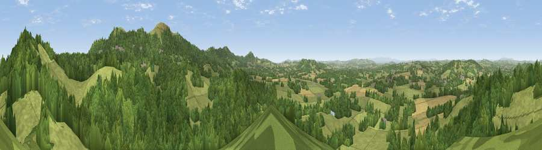

Viewpoint near Mathon
#6276 in England · top 16% of its area beats it · near MathonThe view, rendered

A 360° render of this exact spot computed from the terrain model, tree cover and land cover — summer colours, afternoon light, calibrated against photographs of famous viewpoints. Real trees, hedges and buildings will differ in detail.
The panorama
Grey silhouette: terrain skyline in each direction (720 bearings, Earth curvature and refraction included). Dashed green: skyline with trees (+15 m) and buildings (+8 m) as obstacles. Blue strip: how far the ground is visible on each bearing.
Where the view opens
Wedge length = distance to the farthest visible ground on that bearing (vegetation-aware). Rings at 10, 25 and 50 km.
What fills the view
48% woodland · 46% grassland · 5% cropland
Angular shares of the visible panorama (visual magnitude), not map area. Landscape diversity 0.39 (0–1 Shannon).
Key numbers
More beautiful places nearby
The staircase of upgrades: each row has a higher view potential than everything closer. Driving times are estimates from straight-line distance, calibrated against real road routing — check an actual route before setting out.
| Place | Direction | Drive | Score |
|---|---|---|---|
| High Grove Hill | NNE · 1 km | ~3 min | 74.2 |
| Viewpoint near West Malvern | ENE · 2 km | ~6 min | 81.4 |
| North Hill | E · 2 km | ~6 min | 86.8 |
| Worcestershire Beacon | ESE · 2 km | ~6 min | 87.1 |
| Viewpoint near West Quantoxhead | SSW · 121 km | ~145 min | 87.9 |
| Viewpoint near West Quantoxhead | SSW · 121 km | ~146 min | 88.7 |
| Holdstone Hill | SW · 149 km | ~172 min | 90.2 |
| The Knoll | S · 160 km | ~182 min | 91.0 |
52.11117, -2.37268 · source: screening · position refined by local search. Computed location — check access rights before visiting.